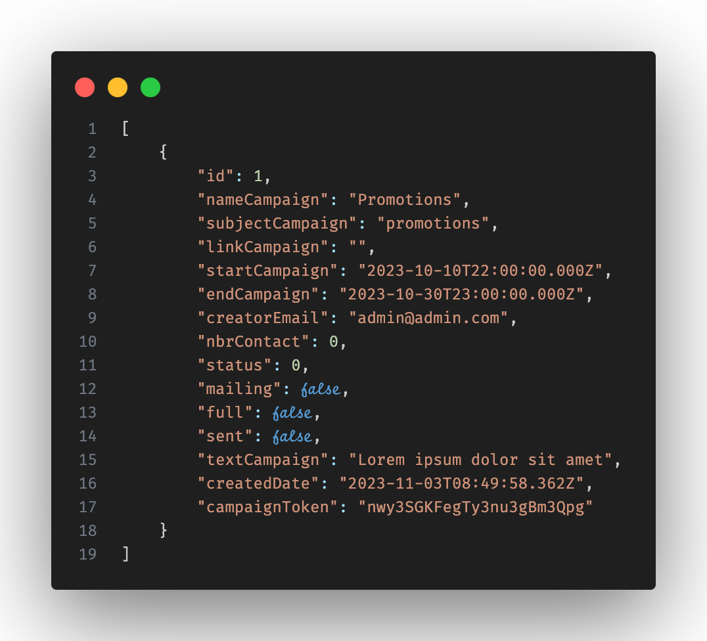
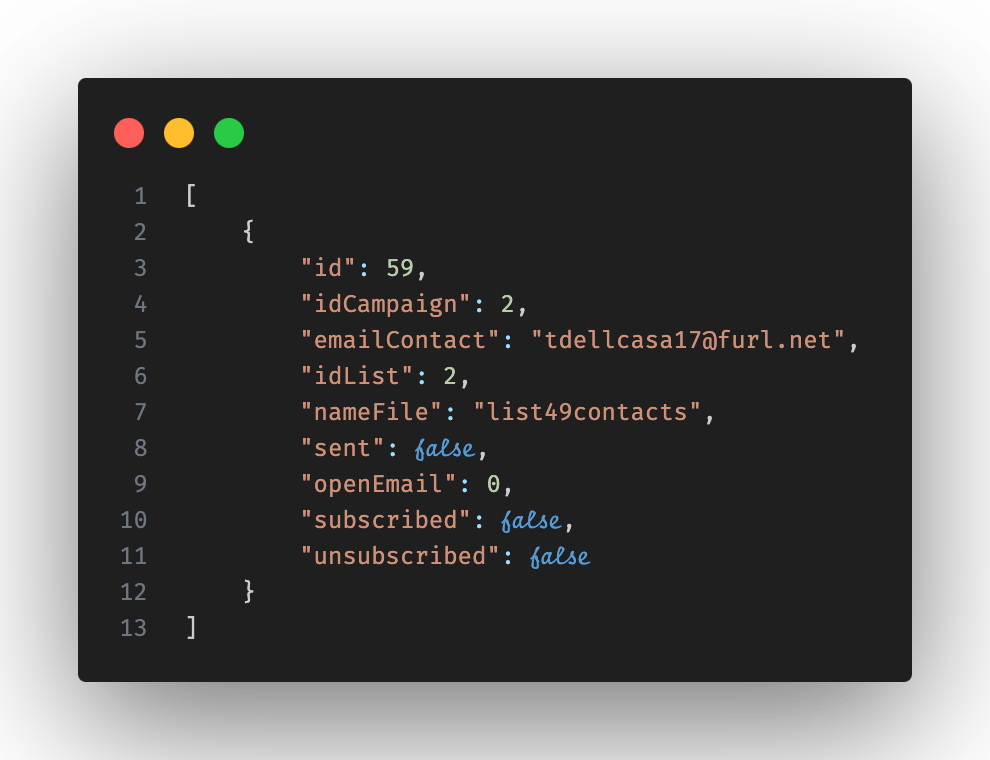
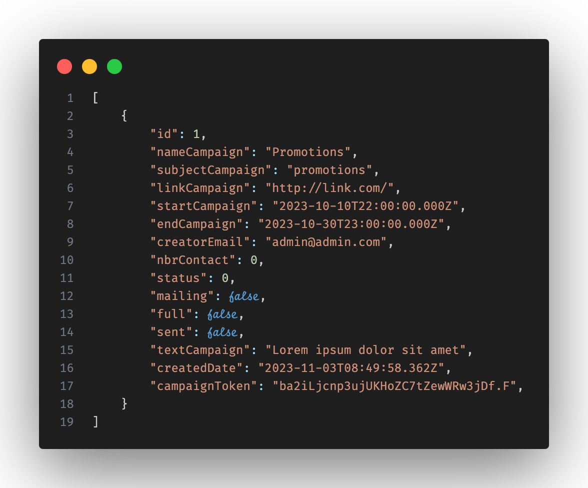
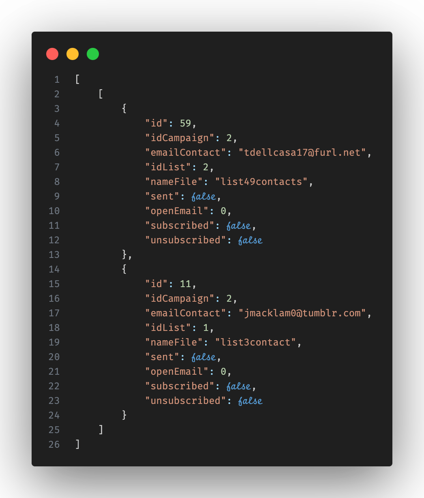
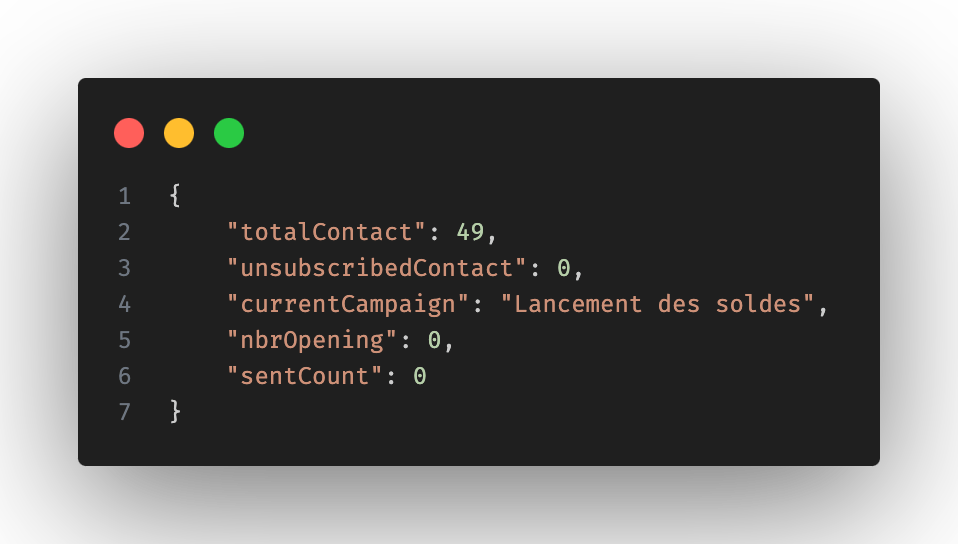

listCampaign 🔝
Cette route get permet de renvoyé une liste de toutes les campagnes

En cas d'erreur le statut 500 sera renvoyé
contactList/:id 🔝
Cette route get permet de recuperer tout les contacts liés à la campagne de l'id passé en paramètre

En cas d'erreur le statut 500 sera renvoyé
contactListUnsuscribed/:id 🔝
Cette route get permet de recuperer tout les contacts désinscrit de cette campagne
En cas d'erreur le statut 500 sera renvoyé
listUser 🔝
Cette route get permet de récuperer tout les utilisateurs inscrit
En cas d'erreur le statut 500 sera renvoyé
user/:id 🔝
Cette route get permet de récuperer les information de l'utilisateur qui demande à se connecté

En cas d'erreur le statut 500 sera renvoyé
campaignDetail/:id 🔝
Cette route get permet de recuperer les detail de la campagne selon l'id passé en paramètre

En cas d'erreur le statut 500 sera renvoyé
campaignDetail/:id 🔝
Cette route get permet de tracker l’ouverture de mails

En cas d'erreur le message "false" en json sera renvoyé
/:idCampaign/:nameList/invalidContact 🔝
Cette route get permet de recuperer les contacts invalides
detailCampaignHasContact/:id 🔝
Cette route get permet de recuperer les informations dans la table de liaison "campaign_has_contact" à partir d'un id de campagne envoyé en paramètre

En cas d'erreur le statut 500 sera renvoyé
unsubscribed/:tok 🔝
Cette route get permet la désinscription d'un contact de la campagne avec le token renvoyé en paramètre
subscribed/:tok 🔝
Cette route get permet la réinscription d'un contact de la campagne avec le token renvoyé en paramètre
statistic/:id 🔝
Cette route get permet de recuperer les statistiques d'une campagne avec son id

validateCampaign 🔝
Cette route sert post à mettre à jour l'etat complet (colonne full) de la campagne dans la base de données. Quand la validation du mailing et l'ajout de contact se fait, la colonne full passe de false à true
addMailing post 🔝
Cette route sert à mettre à jour l'etat du mailing. Quand l'ajout d'un texte est validé, dans la table "campaign", la colonnes "textCampaign" se mets à jour avec le texte, la colonne "mailing" passe à true. L'ajout d'un lien est une option et se mettra à jour à la validation du mailing.
login 🔝
Cette route post sert à la connexion. Grace à l'email ainsi que le mot de passe, l'utilisateur sera connecté. Lorsque la connexion est valide, le statut 200 sera renvoyé.
createContactList 🔝
Cette route post sert à la creation de liste de contacts. La liste est envoyé sous forme de fichier csv. Les nouveau contacts valides seront ajoutés dans la table "contact" ainsi que , les contacts déjà existants seront Lorsque la creation est valide, le statut 200 sera renvoyé ainsi que le nombre de contact invalide sous format json.
addContact 🔝
Cette route post
createCampaign 🔝
Cette route post sert à la creation de la campagne.
testSendCampaign 🔝
Cette route post sert à envoyé un email de test pour avoir un aperçu de l'email dans un client mail.